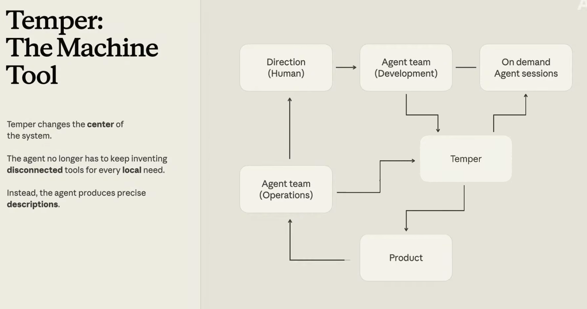

Datadog는 에이전트가 명세(specification)를 쓰게 하고, 결정론적 커널(deterministic kernel)이 그 명세로 애플리케이션 코드를 만들게 한다.
Datadog의 모든 엔지니어는 프로덕션 코드를 짤 때 AI 코딩 도구를 쓰며, 그중 최소 3분의 2는 Claude Code가 이끈다. Datadog는 Claude Code로 자사 소프트웨어 개발 생명주기(SDLC) 안에서 네 가지 뚜렷한 범주의 맞춤형 작업 흐름을 만들어 낸다:
그런데 작업이 이 지도 위를 흘러 다니면서, 한 축에서는 만들어 내기가 더 복잡해지고 다른 축에서는 검증하기가 더 모호해진다는 것을 그들은 알게 됐다.
엔지니어에게 흐름(flow)이란 예전에는 의도와 코드 사이의 직접적인 관계를 뜻했다. 문제를 이해하고, 코드를 쓰고, 테스트하고, 리뷰하고, 출하하고, 운영하고, 다시 반복한다. 그런데 에이전트가 등장하면서 그 추상화 수준이 빠르게 바뀌고 있다.
“이제 코드를 직접 쓰는 게 아니라 일을 빚어냅니다. 에이전트가 무엇을 봐야 하는지 정하죠. 어떤 도구를 줄지, 성공이 무엇을 뜻하는지, 실패는 어떻게 감지할지…마치 모두가 관리 사슬에서 세 단계씩 승진한 것 같아요. 엔지니어라서 지원한 건데, 정작 그런 걸 하겠다고 나선 적은 없는데도 말이죠.” — Datadog 엔지니어링 부문 부사장 세시 날라(Sesh Nalla)
Claude Managed Agents 같은 방식 덕분에 Datadog의 세션은 더 오래, 때로는 며칠씩 돌아간다. 에이전트는 저마다 자기만의 도구, 자기만의 접착 코드(glue code), 자기만의 관례를 만들어 낸다. 에이전트는 훨씬 쓸모 있어지지만, 에이전트의 실행과 사람을 위해 설계된 도구 사이의 간극을 메우려면 여전히 사람이 필요하다.
공작기계(machine tool)란 제조 현장에서 보는 지그(jig), 고정구(fixture), 게이지(gauge), 밀링머신(mill) 같은 것들이다. 정밀하고 반복 가능한 부품을 만들어 내며, 이 부품들을 조립해 엔진, 항공기, 원자로, 달 착륙선 같은 더 크고 복잡한 기계를 만든다. 부품이 조립 가능(composable)하고 검사 가능(inspectable)하며 교체 가능(replaceable)해지면서, 공작기계는 산업화의 돌파구가 되었다.
Temper는 세시가 말하는, 에이전트 시스템을 위한 범용 공작기계를 향한 Datadog의 시도다. 다시 말해, 에이전트가 필요한 것을 안전하고 정밀하게 만들어 내는 데 요구되는 가장 작은 커널이다.
“우리에게 좀 더 구조적인 무언가가 필요하다고 느낀 지점이 바로 여기였습니다.” 세시는 말한다. “에이전트가 미션 크리티컬한 우리 시스템과 데이터베이스의 큰 부분을 만들고 운영하려면, 이 공작기계 개념에 해당하는 것이 필요합니다. Temper가 바로 Datadog의 그 공작기계입니다.”
기계화(mechanization)란 이제 에이전트가 더 많은 일을 한다는 뜻이다. 그리고 산업화(industrialization)란 일이 반복 가능하고, 검증 가능하며, 통제 가능하고, 확장 가능해진다는 뜻이다. Datadog에서 이 일은 한꺼번에 일어나지 않았다. Temper로 가는 길은 Courier, BitsEvolve, Helix라는 세 개의 다른 프로젝트를 거쳤다. 각 프로젝트는 다음 프로젝트를 위한 병목을 드러냈고, 그들이 야망을 키울 수 있게 해 주었다.
2024년, 그들은 분산 큐잉(queuing) 시스템 Courier를 선보였다. 온전히 손으로, 처음부터 만드는 데 1년이 걸렸다.
“어려운 건 부품을 만드는 게 아니었습니다. 부품들 사이의 상호작용을 관측 가능하고, 테스트 가능하며, 검증 가능하게 만드는 것이었죠.” 세시는 말한다. “그래서 우리는 형식 모델링(formal modeling)과 시뮬레이션을 엄격하게 적용했습니다… 실수하면 비용이 크거나 되돌리기 어려운 부분을 짚어 내고, 거기서 엄밀함의 수준을 높였습니다.”
2025년 9월, 그들은 닫힌 루프(closed-loop) 진화형 최적화 하니스(harness)인 BitsEvolve를 만들었다. 여러 모델로 이뤄진 협의체(council)가 코드 변종(variant)을 만들어 낸다. 벤치마크, 테스트, 프로덕션 관측성(observability)이 줄줄이 이어지며 무엇이 살아남을지 결정한다.
“소프트웨어의 일부를 살아 있는 유기체처럼 길러 낼 수 있겠다는 걸 처음으로 어렴풋이 본 순간이었습니다. 변이(variation)와 피드백, 적응(adaptation)을 통해 자라나게 하는 거죠.” — 세시
함정이 있었다. 진화는 그것이 적응하는 환경만큼만 좋을 수 있는데, BitsEvolve의 병목은 바로 이 피드백 루프였다. 그래서 그들은 Kafka에 견줄 만한 스트리밍 서비스 Helix를 만들었다. 사람 한 명이 방향을 잡는 가운데 대부분의 구축은 Claude Code가 해냈다.
“믿기 어렵게도, 며칠 만에 우리는 Kafka에 견줄 만한 완전히 동작하는 시스템을 갖게 됐습니다.” 세시는 말한다. “[구축이 빨랐고] 우리는 그것을 섀도잉(shadowing)하기 시작했는데, 비용을 2~5배 줄일 수 있는 지점들이 보였습니다.”
다만 그것을 프로덕션에 올리기까지는 훨씬 더 많은 거리를 달려야 했다. 운영 견고화(operational hardening)는 시간을 들여, 그리고 한 사람이 아닌 여러 사람이 함께해야만 얻어지는 것이었고, 지금도 여전히 점진적으로 배포되는 중이다.
“병목이 또 옮겨 갔습니다. 에이전트가 시스템의 큰 부분을 만들 수는 있게 됐지만…그다음엔 사람이, 사람을 위해 만들어진 도구와 방식을 거쳐 그 작업을 프로덕션에 올리도록 여전히 조율해야 했죠.” — 세시
Datadog에는 에이전트가 검증되고 정책으로 통제되는 런타임 환경 안에서 스스로의 도구를 만들 수 있는 방법이 필요했다. 그 런타임이 바로 Temper였다.
에이전트는 어떤 팀이 손으로 리뷰하는 속도보다도 빠르게 코드를 만들어 낼 수 있지만, 실수도 할 수 있다.
세시가 보기에, 에이전트가 만들어 내는 것과 검증을 통과하는 것 사이의 그 간극이야말로 실패 양상(failure mode)이 쌓이는 곳이다. 그런데 전통적인 코드베이스에 에이전트를 그저 씌우기만 하는 것은, 검증의 간극 자체를 좁히지 않은 채 이를 처리량(throughput) 문제로만 다루는 것이다.
Temper는 이 방정식을 뒤집는다. 에이전트는 애플리케이션 코드를 만드는 대신 명세(specification)를 만든다. 커널은 각 명세를 읽어 네 겹의 분석으로 검증한 뒤, 그 명세가 기술하는 실행 시스템을 배포한다. 명세는 증명되는 결과물(artifact)인 동시에 실제로 실행되는 결과물이기 때문에, 검증된 것과 실제로 돌아가는 것 사이에 어긋남(drift)이 없다.

“Temper는 시스템의 중심을 바꿉니다. 에이전트는 더 이상 국소적인 필요마다 서로 연결되지 않는 도구를 계속 발명할 필요가 없습니다. 대신 의도와 문제 영역을 정밀하게 기술한 명세를 만들어 냅니다. 이것은 지그나 CNC 기계와 같은 의미의 공작기계입니다. 나사산(screw threading)이 어때야 하는지 명세를 주면 되는 거죠. 대단히 반복 가능합니다. 그것들을 돌려서 항공기 같은 복잡한 것도 만들 수 있습니다.” — 세시
그래서 이 경우 에이전트는 매번 최종 메커니즘을 즉흥적으로 지어내지 않는다. 정밀한 기술(description)을 만들어 내고 Temper(또는 Temper 같은 메커니즘)와 함께 반복하면서, 먼저 뭔가를 동작하게 만든 다음 그것을 반복 가능하고 검사 가능하며 재사용 가능한 것으로 바꿀 수 있다. 그렇게 하면 코드베이스를 중심으로 실제 소프트웨어 공장(software factory)을 세울 수 있다.
각 기능(capability)은 세 가지 계약(contract)으로 기술된다:
모든 명세는 커널이 로드하기 전에 네 개의 독립된 계층을 통과한다. 기호 추론(symbolic reasoning)은 각 가드(guard)가 충족 가능(satisfiable)한지, 각 불변식(invariant)이 귀납적(inductive)인지 증명한다. 완전 상태 탐색(exhaustive state exploration)은 도달 가능한 모든 상태를 방문한다.
결정론적 시뮬레이션(deterministic simulation)은 실제 프로덕션 코드 경로를, 시드(seed)를 심은 결함 주입(fault injection)—패킷 유실, 지연, 순서 뒤섞기, 크래시—과 함께 돌린다. 그래서 같은 시드에서는 실패가 정확히 똑같이 재현된다.
무작위 속성 테스트(randomized property testing)는 약 천 개의 유사난수(pseudorandom) 액션 시퀀스를 돌리고, 위반이 발견되면 그것을 최소 반례(counterexample)로 줄인다. 작은 명세라면 이 전체 과정이 1초도 채 안 걸린다.
사이먼 윌리슨(Simon Willison)은 ‘다크 팩토리(dark factory)’라는 용어를 널리 알렸다. 가상의 공장 바닥에서 사람 없이 에이전트가 계속 일하는 소프트웨어 프로세스를 가리킨다. Helix 다크 팩토리에서 Temper는 세 가지 역할을 한다.
그것은 매니지드 에이전트를 위한 에이전트 컨트롤 플레인(control plane)이다—세션, 역할, 작업 큐, 생명주기를 다룬다. 그것은 도구 빌더(tool-builder) 계층으로, 에이전트가 SDLC 도구(Git, CI, 배포)를 작은 Temper 앱과 잇게 해 준다. 그리고 그것은 Helix 컨트롤 API로, 워크로드를 구동하는 데이터 플레인 주위의 생명주기 표면(surface)이다.
“놀라웠던 건, 그것이 에이전트 인프라보다 훨씬 더 일반적인 것처럼 느껴지기 시작했다는 점입니다. 눈을 가늘게 뜨고 보면, 많은 소프트웨어는 그저 데이터베이스 API를 둘러싼 제어 로직(control logic)일 뿐입니다. 상태, 변경(mutation)에 관한 정책, 생명주기 전이, 외부 시스템과의 통합 말이죠. Temper는 제가 말한 그런 형태를 가진 어떤 소프트웨어에도 적용될 수 있다는 점에서 범용(universal)일 수 있습니다.” — 세시
“Claude Code는 [TypeScript나 Python으로 CRUD 앱을 만드는 것]을 아주 잘합니다. 하지만 보통의 CRUD 앱에서는 제어 로직이 라우트, 데이터베이스 제약(constraint), 서비스 코드, 백그라운드 잡, 그리고 문서에 흩어져 있습니다. 테스트와 커버리지가 좋을 수는 있지만, 대개 상태 기계(state machine) 형태를 띠는 그 운영 모드(operational mode)는 코드베이스 안에 암묵적으로 숨어 있습니다.” — 세시
“Temper는 그 상태 기계를 명시적으로 만듭니다. 에이전트는 임의의 코드가 아니라 정밀한 기술을 만들어 냅니다. 컴파일 단계는 LLM 바깥에 있습니다. Rust 코드를 Rust 컴파일러에 넘기는 것과 똑같은 방식이죠. 전이 표(transition table)는 서비스 메서드에 파묻힌 스파게티 제어 흐름이 아니라 데이터입니다. 에이전트는 그것을 안전하게 동적으로 바꿀 수 있고, CI를 거치지 않고도 즉시 리로드(hot-reload)할 수 있습니다.” — 그가 설명한다.
Temper의 밑바탕에 깔린 생각은, 각 결과물이 사람 머릿속에 들어갈 만큼 작아야 한다는 것이다. 항공이나 금융 시스템 같은 고신뢰(high-assurance) 소프트웨어는 수십 년간 이런 방식으로 만들어져 왔다. 하지만 사람의 손으로 그 엄밀함을 달성하는 비용은 일반적인 소프트웨어에는 너무 비쌌다—에이전트가 등장하기 전까지는.
산업 혁명이 가능했던 것은 공작기계가 부품을 조립 가능하고, 검사 가능하며, 교체 가능하게 만든 덕분이었다. 그래서 우리는 점점 더 크고 복잡한 기계를 만들 수 있었다.
“에이전트가 이런 규율(discipline)을 갖추고 공장 안에서 자율적으로 소프트웨어를 만들 수 있다면, 어쩌면 우리는 다크 팩토리에서 멈출 필요가 없을지도 모릅니다. 이렇게 만들어진 소프트웨어는 우리가 피드백과 선택(selection), 적응을 통해 기르고, 가꾸고, 진화시킬 수 있는 유기체처럼 느껴지기 시작합니다.” — 세시
| 진짜 병목은 생성인가, 검증인가? | 검증이라고 가정하라. 에이전트는 이미 어떤 팀이 리뷰할 수 있는 것보다 빠르게 코드를 만들어 낸다. 생성된 것과 증명된 것 사이의 간극이 바로 실패 양상이 쌓이는 곳이다. 처리량을 더 늘리는 데가 아니라 거기에 투자하라. |
|---|---|
| 에이전트는 실제로 무엇을 내놓아야 하나? | 제어 로직에 대해서는 (코드가 아니라) 명세를, 임의의 코드에 대해서는 증명을 함께 지니게(proof-carrying) 하라. 컴파일과 증명은 LLM 바깥에 두라—명세를 결정론적 커널에 넘겨, 검증되는 결과물이 곧 실행되는 결과물이 되게 하라. |
| 제어 로직이 명시적인가, 아니면 코드베이스 곳곳에 흩어져 있는가? | 상태 기계를 라우트, 서비스 메서드, 백그라운드 잡에서 끄집어내 데이터로 만들라. 에이전트가 정책 아래에서 읽고, 고치고, 즉시 리로드할 수 있는 전이 표로. |
| 사람이 각 결과물을 머릿속에 담아 이해할 수 있는가? | 그럴 수 없다면 출발점으로 되돌아온 것이다. 생성되는 모든 조각을 추론할 수 있을 만큼 작게 유지하라. |